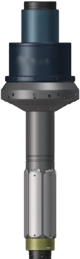

ССОК (СИСТЕМА СПУСКА ОБСАДНЫХ КОЛОНН)
Система предназначена для управляемого спуска обсадных колонн, бурения на обсадной колонне, захвата и удержания на весу обсадных колонн при свинчивании.
Применяется на буровых установках, оснащенных системой верхнего привода, позволяющей производить свинчивание и развинчивание соединений, циркуляцию буровой жидкости и вращение колонны обсадных труб.
ТЕХНИЧЕСКИЙ ПАСПОРТ- В комплект входят
Штропы однострунные

ХАРАКТЕРИСТИКИ
Грузоподъемность
381 тГрузоподъемность Грузоподъемность Грузоподъемность Грузоподъемность Грузоподъемность Грузоподъемность
ОК178 мм. (7'), 245 мм. (9-5/8'), 324 мм. (12-3/4'), 340 мм (13-3/8)Грузоподъемность
381 тГрузоподъемность
381 тГрузоподъемность
381 т